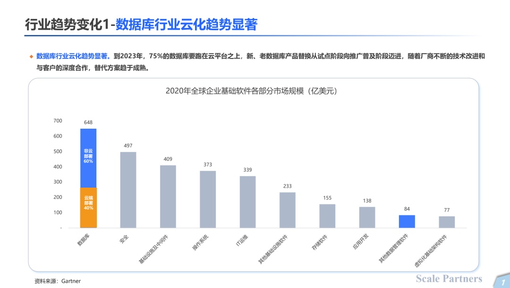
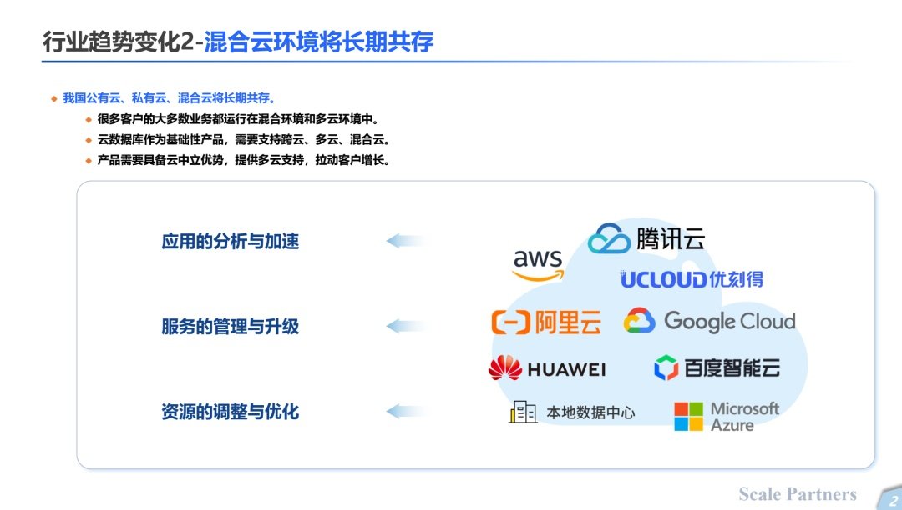
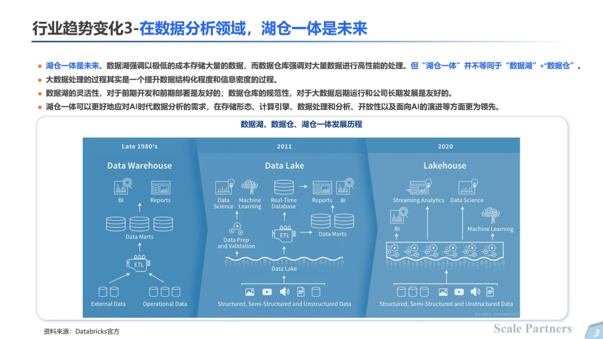
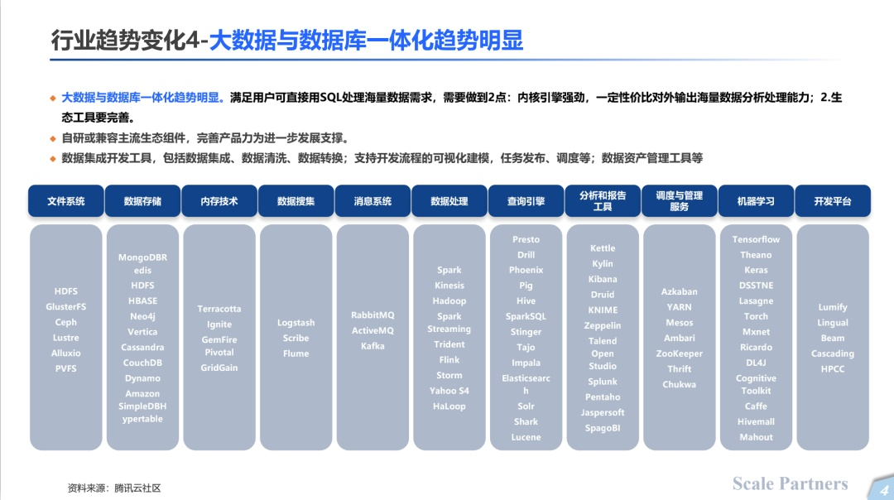
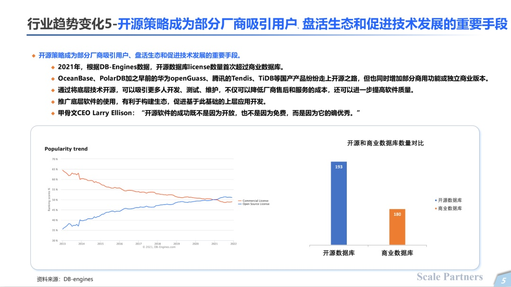
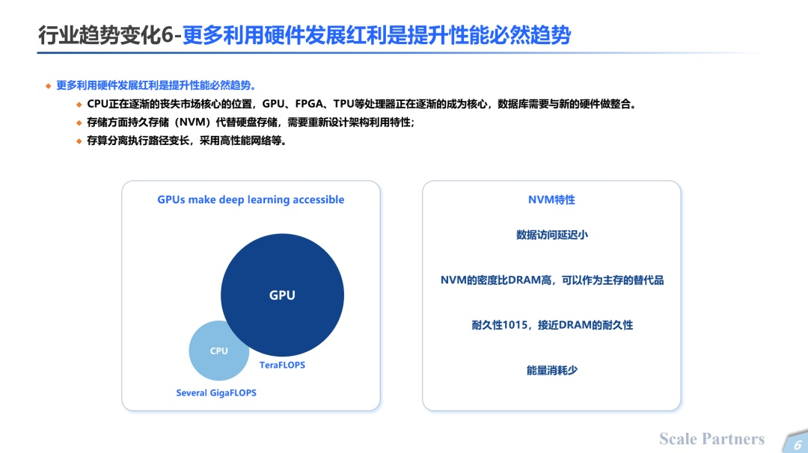

一文看懂数据库行业的六大发展趋势
数字化大势所趋，“云”成了兵家必争之地。
在数据量大幅增长和数据结构更加复杂的大环境下，数据库行业的巨大潜力也不断释放。Gartner报告显示，2020年全球数据库市场规模为648亿美元，是全球基础软件市场的最大构成。未来，数据库市场的规模还将继续增长，预计到2024年，全球数据库市场规模将达到1000亿美元。
根据2022年1月墨天轮数据，国产数据库数量已达194款。朝阳赛道，玩家涌入，谁能最终“笑傲江湖”？
3月19日，在光锥智能联合Scale Partners势乘资本举办的硬科技沙龙第一期“云起·数据库”中，Scale Partners势乘资本投资经理王圆珍总结了数据库行业的六大变化趋势。
数据库行业云化趋势显著

2020年数据库市场规模占到全球基础软件市场规模的最大比重。其中，云端部署的数据库占比约45%，总规模约250亿美金左右。未来，这个趋势还会持续增长。
混合云环境将长期共存

根据走访一线客户的经验来看，客户的云环境有公有云，私有云，混合云，以及近年来出现的行业专属云。多云环境对资源的调整与调优，服务的管理与升级，应用的分析与加速，提出了更高的要求。对于数据库这类通用基础软件产品而言，也会有提升性能和提高性价比的诉求，这也是众多初创厂商的机会。
在数据分析领域，湖仓一体是未来

根据Databricks的官方资料，1980年开始，数仓在结构化数据的分析上具有优势；2011年，数据湖的出现，解决了结构化数据、半结构化数据和非结构化数据的存储成本问题；2020年，Databricks等企业崛起，数据分析领域开始出现湖仓一体的趋势，同时发挥数据湖的低成本存储与数仓的高性能分析优势。
未来基于AI和数据智能，湖仓一体是趋势。
大数据与数据库一体化趋势明显

随着数据量的爆发和数据结构逐渐复杂化，数据库需要和大数据的技术栈融合。自研或兼容主流生态组件的过程中，也会对厂商提出一定的技术和战略选择要求。
开源策略成为部分厂商吸引用户，盘活生态和促进技术发展的重要手段

根据DB-Engines的数据，2021年，开源数据库数量首次超过了商业数据库数量，前者的比重和整体数量都呈现增长趋势。
类似openGuass、TiDB这样的厂商，分别在核心组件上进行了不同程度的开源，一方面可以给商业版引流，另一方面可以吸引更多人在开源底层基础上进行测试、维护和开发，提升软件质量。但不论基于开源的数据库，还是闭源的数据库，数据库本身的内核能力都非常重要。
更多利用硬件发展红利是提升性能必然趋势

硬件优化无止境。无论是从计算层面，GPU逐渐取代CPU的市场，占据主流计算位置，还是基于持久化的NVM存储替代磁盘和硬盘存储，数据库作为一个通用和底层的软件，也需要利用硬件本身的性能去做架构的调整和优化。此外，基于云原生的场景，存算分离的架构会导致整个任务的执行路径变得更长，所以采用高性能的网络也会优化数据库性能。